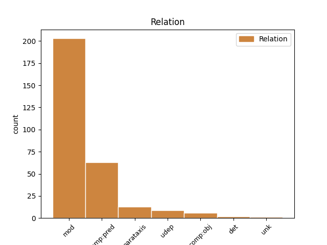
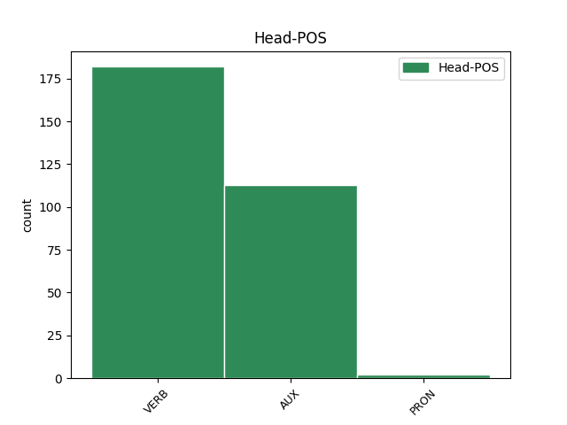
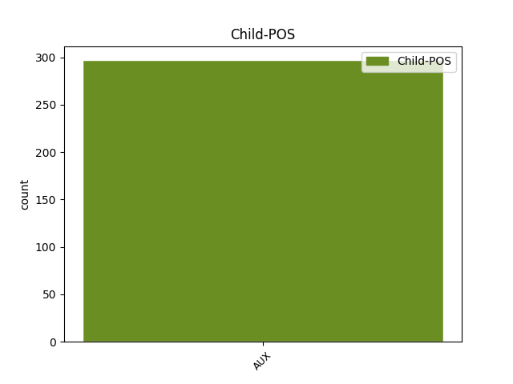

Distribution of features within this leaf



Agreement Rules sorted by frequency.
- When the dependent token is the modifer(mod) of the head token, and the head token is VERB and the dependent token is AUX.
1 הם _ _ _ _ 0 _ _ _
2 היו _ AUX AUX Gender=Fem,Masc|Number=Plur|Person=3|Polarity=Pos|Tense=Past|VerbType=Cop 30 mod _ _
3 פצועים _ _ _ _ 0 _ _ _
4 כבר _ _ _ _ 0 _ _ _
5 ב _ _ _ _ 0 _ _ _
6 ה_ _ _ _ _ 0 _ _ _
7 שבוע _ _ _ _ 0 _ _ _
8 ש _ _ _ _ 0 _ _ _
9 עבר _ _ _ _ 0 _ _ _
10 , _ _ _ _ 0 _ _ _
11 אך _ _ _ _ 0 _ _ _
12 שיחקו _ _ _ _ 0 _ _ _
13 ב _ _ _ _ 0 _ _ _
14 סוף _ _ _ _ 0 _ _ _
15 ה _ _ _ _ 0 _ _ _
16 שבוע _ _ _ _ 0 _ _ _
17 ו _ _ _ _ 0 _ _ _
18 אף _ _ _ _ 0 _ _ _
19 אחד _ _ _ _ 0 _ _ _
20 מ _ _ _ _ 0 _ _ _
21 ה _ _ _ _ 0 _ _ _
22 שלושה _ _ _ _ 0 _ _ _
23 לא _ _ _ _ 0 _ _ _
24 סיים _ _ _ _ 0 _ _ _
25 את _ _ _ _ 0 _ _ _
26 ה _ _ _ _ 0 _ _ _
27 משחק _ _ _ _ 0 _ _ _
28 " _ _ _ _ 0 _ _ _
29 , _ _ _ _ 0 _ _ _
30 אמר אמר VERB VERB Gender=Masc|HebBinyan=PAAL|Number=Sing|Person=3|Tense=Past|Voice=Act 0 _ _ _
31 גדעון _ _ _ _ 0 _ _ _
32 כהן _ _ _ _ 0 _ _ _
33 . _ _ _ _ 0 _ _ _
1 עם _ _ _ _ 0 _ _ _
2 זאת _ _ _ _ 0 _ _ _
3 , _ _ _ _ 0 _ _ _
4 אילו _ _ _ _ 0 _ _ _
5 אפשר _ _ _ _ 0 _ _ _
6 היה _ AUX AUX Gender=Masc|Number=Sing|Person=3|Polarity=Pos|Tense=Past|VerbType=Cop 13 comp:pred _ _
7 לנצח _ _ _ _ 0 _ _ _
8 מלחמה _ _ _ _ 0 _ _ _
9 ב _ _ _ _ 0 _ _ _
10 התלהבות _ _ _ _ 0 _ _ _
11 בלבד _ _ _ _ 0 _ _ _
12 , _ _ _ _ 0 _ _ _
13 היו _ AUX AUX Gender=Fem,Masc|Number=Plur|Person=3|Polarity=Pos|Tense=Past|VerbType=Cop 0 _ _ _
14 ה _ _ _ _ 0 _ _ _
15 מתנדבים _ _ _ _ 0 _ _ _
16 הללו _ _ _ _ 0 _ _ _
17 כבר _ _ _ _ 0 _ _ _
18 עכשיו _ _ _ _ 0 _ _ _
19 ב _ _ _ _ 0 _ _ _
20 כוויית _ _ _ _ 0 _ _ _
21 סיטי _ _ _ _ 0 _ _ _
22 . _ _ _ _ 0 _ _ _
1 ה _ _ _ _ 0 _ _ _
2 סטטיסטיקה _ _ _ _ 0 _ _ _
3 היא הוא AUX AUX Gender=Fem|Number=Sing|Person=3|Polarity=Pos|VerbForm=Part|VerbType=Cop 0 _ _ _
4 מדהימה _ _ _ _ 0 _ _ _
5 : _ _ _ _ 0 _ _ _
6 22.5 _ _ _ _ 0 _ _ _
7 % _ _ _ _ 0 _ _ _
8 מ _ _ _ _ 0 _ _ _
9 תלמידי _ _ _ _ 0 _ _ _
10 ה _ _ _ _ 0 _ _ _
11 משפטים _ _ _ _ 0 _ _ _
12 ב _ _ _ _ 0 _ _ _
13 ה_ _ _ _ _ 0 _ _ _
14 מכללה _ _ _ _ 0 _ _ _
15 הם הוא AUX AUX Gender=Masc|Number=Plur|Person=3|Polarity=Pos|VerbForm=Part|VerbType=Cop 3 parataxis _ _
16 בעלי _ _ _ _ 0 _ _ _
17 תואר _ _ _ _ 0 _ _ _
18 אקדמי _ _ _ _ 0 _ _ _
19 ב _ _ _ _ 0 _ _ _
20 מקצועות _ _ _ _ 0 _ _ _
21 אחרים _ _ _ _ 0 _ _ _
22 , _ _ _ _ 0 _ _ _
23 ו _ _ _ _ 0 _ _ _
24 שיעור _ _ _ _ 0 _ _ _
25 דומה _ _ _ _ 0 _ _ _
26 למד _ _ _ _ 0 _ _ _
27 לימודים _ _ _ _ 0 _ _ _
28 אקדמיים _ _ _ _ 0 _ _ _
29 חלקיים _ _ _ _ 0 _ _ _
30 . _ _ _ _ 0 _ _ _
1 הוא _ _ _ _ 0 _ _ _
2 רומז רמז VERB VERB Gender=Masc|HebBinyan=PAAL|Number=Sing|Person=1,2,3|VerbForm=Part|Voice=Act 0 _ _ _
3 ל _ _ _ _ 0 _ _ _
4 קשיים _ _ _ _ 0 _ _ _
5 ש _ _ _ _ 0 _ _ _
6 יש _ _ _ _ 0 _ _ _
7 ל _ _ _ _ 0 _ _ _
8 משרד _ _ _ _ 0 _ _ _
9 ה _ _ _ _ 0 _ _ _
10 משטרה _ _ _ _ 0 _ _ _
11 ו _ _ _ _ 0 _ _ _
12 ל _ _ _ _ 0 _ _ _
13 שר _ _ _ _ 0 _ _ _
14 ה _ _ _ _ 0 _ _ _
15 משטרה _ _ _ _ 0 _ _ _
16 ב _ _ _ _ 0 _ _ _
17 מימוש _ _ _ _ 0 _ _ _
18 אחריות_ _ _ _ _ 0 _ _ _
19 _של_ _ _ _ _ 0 _ _ _
20 _הוא _ _ _ _ 0 _ _ _
21 ה _ _ _ _ 0 _ _ _
22 מיניסטריאלית _ _ _ _ 0 _ _ _
23 : _ _ _ _ 0 _ _ _
24 " _ _ _ _ 0 _ _ _
25 משרד _ _ _ _ 0 _ _ _
26 ה _ _ _ _ 0 _ _ _
27 משטרה _ _ _ _ 0 _ _ _
28 , _ _ _ _ 0 _ _ _
29 כ _ _ _ _ 0 _ _ _
30 גוף _ _ _ _ 0 _ _ _
31 מטה _ _ _ _ 0 _ _ _
32 מקצועי _ _ _ _ 0 _ _ _
33 ו _ _ _ _ 0 _ _ _
34 מתאם _ _ _ _ 0 _ _ _
35 של _ _ _ _ 0 _ _ _
36 שר _ _ _ _ 0 _ _ _
37 ה _ _ _ _ 0 _ _ _
38 משטרה _ _ _ _ 0 _ _ _
39 , _ _ _ _ 0 _ _ _
40 אמור אמור AUX AUX Gender=Masc|Number=Sing|Person=1,2,3|VerbType=Mod 2 parataxis _ _
41 לבצע _ _ _ _ 0 _ _ _
42 תפקיד_ _ _ _ _ 0 _ _ _
43 _של_ _ _ _ _ 0 _ _ _
44 _הוא _ _ _ _ 0 _ _ _
45 מול _ _ _ _ 0 _ _ _
46 ה _ _ _ _ 0 _ _ _
47 מטות _ _ _ _ 0 _ _ _
48 של _ _ _ _ 0 _ _ _
49 שתי _ _ _ _ 0 _ _ _
50 זרועות _ _ _ _ 0 _ _ _
51 מבצעיות _ _ _ _ 0 _ _ _
52 ( _ _ _ _ 0 _ _ _
53 משטרה _ _ _ _ 0 _ _ _
54 ו _ _ _ _ 0 _ _ _
55 שב"ס _ _ _ _ 0 _ _ _
56 ) _ _ _ _ 0 _ _ _
57 בעלות _ _ _ _ 0 _ _ _
58 עוצמה _ _ _ _ 0 _ _ _
59 , _ _ _ _ 0 _ _ _
60 אופי _ _ _ _ 0 _ _ _
61 שמרני _ _ _ _ 0 _ _ _
62 ו _ _ _ _ 0 _ _ _
63 מסורת _ _ _ _ 0 _ _ _
64 אוטונומית _ _ _ _ 0 _ _ _
65 ארוכה _ _ _ _ 0 _ _ _
66 . _ _ _ _ 0 _ _ _
1 ה _ _ _ _ 0 _ _ _
2 מינהל _ _ _ _ 0 _ _ _
3 יקבע קבע VERB VERB Gender=Masc|Number=Sing|Person=3|Tense=Fut 0 _ _ _
4 מי _ _ _ _ 0 _ _ _
5 יהיו היה AUX AUX Gender=Fem,Masc|Number=Plur|Person=3|Polarity=Pos|Tense=Fut|VerbType=Cop 3 udep _ _
6 ה _ _ _ _ 0 _ _ _
7 קבלנים _ _ _ _ 0 _ _ _
8 ש _ _ _ _ 0 _ _ _
9 עם_ _ _ _ _ 0 _ _ _
10 _הם _ _ _ _ 0 _ _ _
11 יתקשר _ _ _ _ 0 _ _ _
12 משרד _ _ _ _ 0 _ _ _
13 ה _ _ _ _ 0 _ _ _
14 בינוי _ _ _ _ 0 _ _ _
15 ו _ _ _ _ 0 _ _ _
16 ה _ _ _ _ 0 _ _ _
17 שיכון _ _ _ _ 0 _ _ _
18 , _ _ _ _ 0 _ _ _
19 ו _ _ _ _ 0 _ _ _
20 כן _ _ _ _ 0 _ _ _
21 את _ _ _ _ 0 _ _ _
22 אמות _ _ _ _ 0 _ _ _
23 - _ _ _ _ 0 _ _ _
24 ה _ _ _ _ 0 _ _ _
25 מידה _ _ _ _ 0 _ _ _
26 ש _ _ _ _ 0 _ _ _
27 ב _ _ _ _ 0 _ _ _
28 עזרה_ _ _ _ _ 0 _ _ _
29 _של_ _ _ _ _ 0 _ _ _
30 _הן _ _ _ _ 0 _ _ _
31 יבחרו _ _ _ _ 0 _ _ _
32 את _ _ _ _ 0 _ _ _
33 ה _ _ _ _ 0 _ _ _
34 קבלנים _ _ _ _ 0 _ _ _
35 הללו _ _ _ _ 0 _ _ _
36 . _ _ _ _ 0 _ _ _
1 ב _ _ _ _ 0 _ _ _
2 קמצו _ _ _ _ 0 _ _ _
3 את _ _ _ _ 0 _ _ _
4 יד_ _ _ _ _ 0 _ _ _
5 _של_ _ _ _ _ 0 _ _ _
6 _הוא _ _ _ _ 0 _ _ _
7 ה _ _ _ _ 0 _ _ _
8 ימנית _ _ _ _ 0 _ _ _
9 ל _ _ _ _ 0 _ _ _
10 אגרוף _ _ _ _ 0 _ _ _
11 הוסיף הוסיף VERB VERB Gender=Masc|HebBinyan=HIFIL|Number=Sing|Person=3|Tense=Past|Voice=Act 0 _ _ _
12 ה _ _ _ _ 0 _ _ _
13 סופר _ _ _ _ 0 _ _ _
14 : _ _ _ _ 0 _ _ _
15 " _ _ _ _ 0 _ _ _
16 כתיבה _ _ _ _ 0 _ _ _
17 היא הוא AUX AUX Gender=Fem|Number=Sing|Person=3|Polarity=Pos|VerbForm=Part|VerbType=Cop 11 comp:obj _ _
18 הקלה _ _ _ _ 0 _ _ _
19 מ _ _ _ _ 0 _ _ _
20 בעיות _ _ _ _ 0 _ _ _
21 ה _ _ _ _ 0 _ _ _
22 חיים _ _ _ _ 0 _ _ _
23 . _ _ _ _ 0 _ _ _
1 ה _ _ _ _ 0 _ _ _
2 עיר _ _ _ _ 0 _ _ _
3 מתאימה _ _ _ _ 0 _ _ _
4 ל_ _ _ _ _ 0 _ _ _
5 _הם _ _ _ _ 0 _ _ _
6 ו _ _ _ _ 0 _ _ _
7 חיי _ _ _ _ 0 _ _ _
8 ה _ _ _ _ 0 _ _ _
9 קיבוץ _ _ _ _ 0 _ _ _
10 אינם אינו AUX AUX Gender=Masc|Number=Plur|Person=3|Polarity=Neg|VerbForm=Part|VerbType=Cop 12 det _ _
11 בשביל_ _ _ _ _ 0 _ _ _
12 _הם הוא PRON PRON Gender=Masc|Number=Plur|Person=3|PronType=Prs 0 _ _ _
13 " _ _ _ _ 0 _ _ _
14 . _ _ _ _ 0 _ _ _
1 הוא _ _ _ _ 0 _ _ _
2 הסביר _ _ _ _ 0 _ _ _
3 כי _ _ _ _ 0 _ _ _
4 ב _ _ _ _ 0 _ _ _
5 מוצ"ש _ _ _ _ 0 _ _ _
6 יטוס _ _ _ _ 0 _ _ _
7 ל _ _ _ _ 0 _ _ _
8 חו"ל _ _ _ _ 0 _ _ _
9 ו _ _ _ _ 0 _ _ _
10 אינו אינו AUX AUX Gender=Masc|Number=Sing|Person=3|Polarity=Neg|VerbForm=Part|VerbType=Cop 11 mod _ _
11 יכול יכול AUX AUX Gender=Masc|Number=Sing|Person=3|Tense=Past|VerbType=Mod 0 _ _ _
12 להופיע _ _ _ _ 0 _ _ _
13 בפני _ _ _ _ 0 _ _ _
14 מארח_ _ _ _ _ 0 _ _ _
15 _של_ _ _ _ _ 0 _ _ _
16 _הוא _ _ _ _ 0 _ _ _
17 בלי _ _ _ _ 0 _ _ _
18 החלטות _ _ _ _ 0 _ _ _
19 ש _ _ _ _ 0 _ _ _
20 יביאו _ _ _ _ 0 _ _ _
21 ל _ _ _ _ 0 _ _ _
22 יישום _ _ _ _ 0 _ _ _
23 תוכנית_ _ _ _ _ 0 _ _ _
24 _של_ _ _ _ _ 0 _ _ _
25 _הוא _ _ _ _ 0 _ _ _
26 ל _ _ _ _ 0 _ _ _
27 עידוד _ _ _ _ 0 _ _ _
28 השקעות _ _ _ _ 0 _ _ _
29 הון _ _ _ _ 0 _ _ _
30 . _ _ _ _ 0 _ _ _
1 ה _ _ _ _ 0 _ _ _
2 ביקוש _ _ _ _ 0 _ _ _
3 ל _ _ _ _ 0 _ _ _
4 הגברת _ _ _ _ 0 _ _ _
5 ה _ _ _ _ 0 _ _ _
6 ייצור _ _ _ _ 0 _ _ _
7 יהיה היה AUX AUX Gender=Masc|Number=Sing|Person=3|Polarity=Pos|Tense=Fut|VerbType=Cop 26 comp:pred _ _
8 חזק _ _ _ _ 0 _ _ _
9 ב _ _ _ _ 0 _ _ _
10 אוסטרליה _ _ _ _ 0 _ _ _
11 , _ _ _ _ 0 _ _ _
12 ב _ _ _ _ 0 _ _ _
13 אמריקה _ _ _ _ 0 _ _ _
14 ה _ _ _ _ 0 _ _ _
15 לטינית _ _ _ _ 0 _ _ _
16 , _ _ _ _ 0 _ _ _
17 ב _ _ _ _ 0 _ _ _
18 ה_ _ _ _ _ 0 _ _ _
19 מזרח _ _ _ _ 0 _ _ _
20 ה _ _ _ _ 0 _ _ _
21 תיכון _ _ _ _ 0 _ _ _
22 ו _ _ _ _ 0 _ _ _
23 ב _ _ _ _ 0 _ _ _
24 קנדה _ _ _ _ 0 _ _ _
25 , _ _ _ _ 0 _ _ _
26 אמרו אמר VERB VERB Gender=Fem,Masc|HebBinyan=PAAL|Number=Plur|Person=3|Tense=Past|Voice=Act 0 _ _ _
27 . _ _ _ _ 0 _ _ _
Disagree Examples:
1 ו _ _ _ _ 0 _ _ _
2 מאמר _ _ _ _ 0 _ _ _
3 מוסגר _ _ _ _ 0 _ _ _
4 : _ _ _ _ 0 _ _ _
5 ה _ _ _ _ 0 _ _ _
6 צירוף _ _ _ _ 0 _ _ _
7 " _ _ _ _ 0 _ _ _
8 קיטש _ _ _ _ 0 _ _ _
9 ו _ _ _ _ 0 _ _ _
10 מוות _ _ _ _ 0 _ _ _
11 " _ _ _ _ 0 _ _ _
12 אינו אינו AUX AUX Gender=Masc|Number=Sing|Person=3|Polarity=Neg|VerbForm=Part|VerbType=Cop 13 mod _ _
13 מאפיין אפיין VERB VERB Gender=Masc|HebBinyan=PIEL|HebSource=ConvUncertainHead|Number=Sing|Person=1,2,3|VerbForm=Part|Voice=Act 0 _ _ _
14 ב _ _ _ _ 0 _ _ _
15 ה_ _ _ _ _ 0 _ _ _
16 פובליציסטיקה _ _ _ _ 0 _ _ _
17 ה _ _ _ _ 0 _ _ _
18 ישראלית _ _ _ _ 0 _ _ _
19 ה _ _ _ _ 0 _ _ _
20 נוכחית _ _ _ _ 0 _ _ _
21 רק _ _ _ _ 0 _ _ _
22 את _ _ _ _ 0 _ _ _
23 טקסי _ _ _ _ 0 _ _ _
24 ה _ _ _ _ 0 _ _ _
25 זיכרון _ _ _ _ 0 _ _ _
26 ל _ _ _ _ 0 _ _ _
27 ה_ _ _ _ _ 0 _ _ _
28 שואה _ _ _ _ 0 _ _ _
29 . _ _ _ _ 0 _ _ _
1 מן _ _ _ _ 0 _ _ _
2 ה _ _ _ _ 0 _ _ _
3 גינוי _ _ _ _ 0 _ _ _
4 ה _ _ _ _ 0 _ _ _
5 כוללני _ _ _ _ 0 _ _ _
6 ה _ _ _ _ 0 _ _ _
7 זה _ _ _ _ 0 _ _ _
8 ברור _ _ _ _ 0 _ _ _
9 , _ _ _ _ 0 _ _ _
10 ש _ _ _ _ 0 _ _ _
11 לא _ _ _ _ 0 _ _ _
12 אקט _ _ _ _ 0 _ _ _
13 זה _ _ _ _ 0 _ _ _
14 או _ _ _ _ 0 _ _ _
15 אחר _ _ _ _ 0 _ _ _
16 הוא _ _ _ _ 0 _ _ _
17 ה _ _ _ _ 0 _ _ _
18 מפריע _ _ _ _ 0 _ _ _
19 ל _ _ _ _ 0 _ _ _
20 שגב _ _ _ _ 0 _ _ _
21 ( _ _ _ _ 0 _ _ _
22 ו _ _ _ _ 0 _ _ _
23 ב _ _ _ _ 0 _ _ _
24 רשימה_ _ _ _ _ 0 _ _ _
25 _של_ _ _ _ _ 0 _ _ _
26 _הוא _ _ _ _ 0 _ _ _
27 נכללו _ _ _ _ 0 _ _ _
28 תיאורי _ _ _ _ 0 _ _ _
29 ביטוי _ _ _ _ 0 _ _ _
30 ו _ _ _ _ 0 _ _ _
31 התנהגות _ _ _ _ 0 _ _ _
32 , _ _ _ _ 0 _ _ _
33 ש _ _ _ _ 0 _ _ _
34 אינם אינו AUX AUX Gender=Masc|Number=Plur|Person=3|Polarity=Neg|VerbForm=Part|VerbType=Cop 35 mod _ _
35 נראים נראה VERB VERB Gender=Masc|HebBinyan=NIFAL|Number=Plur|Person=1,2,3|VerbForm=Part|Voice=Mid 0 _ _ _
36 גם _ _ _ _ 0 _ _ _
37 ל_ _ _ _ _ 0 _ _ _
38 _אני _ _ _ _ 0 _ _ _
39 ) _ _ _ _ 0 _ _ _
40 , _ _ _ _ 0 _ _ _
41 אלא _ _ _ _ 0 _ _ _
42 ה _ _ _ _ 0 _ _ _
43 מסכת _ _ _ _ 0 _ _ _
44 כולה _ _ _ _ 0 _ _ _
45 _היא _ _ _ _ 0 _ _ _
46 . _ _ _ _ 0 _ _ _
1 הוא _ _ _ _ 0 _ _ _
2 גם _ _ _ _ 0 _ _ _
3 אינו אינו AUX AUX Gender=Masc|Number=Sing|Person=3|Polarity=Neg|VerbForm=Part|VerbType=Cop 4 mod _ _
4 מסתייג הסתייג VERB VERB Gender=Masc|HebBinyan=HITPAEL|Number=Sing|Person=1,2,3|VerbForm=Part 0 _ _ _
5 מ _ _ _ _ 0 _ _ _
6 הפקת _ _ _ _ 0 _ _ _
7 לקחים _ _ _ _ 0 _ _ _
8 , _ _ _ _ 0 _ _ _
9 ו _ _ _ _ 0 _ _ _
10 בלבד _ _ _ _ 0 _ _ _
11 ש _ _ _ _ 0 _ _ _
12 יהיה _ _ _ _ 0 _ _ _
13 זה _ _ _ _ 0 _ _ _
14 לקח _ _ _ _ 0 _ _ _
15 מוסרי _ _ _ _ 0 _ _ _
16 - _ _ _ _ 0 _ _ _
17 אוניוורסלי _ _ _ _ 0 _ _ _
18 ; _ _ _ _ 0 _ _ _
19 לא _ _ _ _ 0 _ _ _
20 חלילה _ _ _ _ 0 _ _ _
21 לקח _ _ _ _ 0 _ _ _
22 של _ _ _ _ 0 _ _ _
23 עוצמה _ _ _ _ 0 _ _ _
24 לאומית _ _ _ _ 0 _ _ _
25 . _ _ _ _ 0 _ _ _
1 האם _ _ _ _ 0 _ _ _
2 מפני _ _ _ _ 0 _ _ _
3 ש _ _ _ _ 0 _ _ _
4 כל _ _ _ _ 0 _ _ _
5 מחווה _ _ _ _ 0 _ _ _
6 טקסית _ _ _ _ 0 _ _ _
7 כ _ _ _ _ 0 _ _ _
8 ה_ _ _ _ _ 0 _ _ _
9 זו _ _ _ _ 0 _ _ _
10 בהכרח _ _ _ _ 0 _ _ _
11 איננה אינו AUX AUX Gender=Fem|Number=Sing|Person=3|Polarity=Neg|VerbForm=Part|VerbType=Cop 12 mod _ _
12 מסוגלת מסוגל AUX AUX Gender=Fem|HebSource=ConvUncertainHead|Number=Sing|Person=1,2,3|VerbType=Mod 0 _ _ _
13 לשקף _ _ _ _ 0 _ _ _
14 את _ _ _ _ 0 _ _ _
15 ה _ _ _ _ 0 _ _ _
16 דבר _ _ _ _ 0 _ _ _
17 עצמו _ _ _ _ 0 _ _ _
18 , _ _ _ _ 0 _ _ _
19 את _ _ _ _ 0 _ _ _
20 ה _ _ _ _ 0 _ _ _
21 חסר _ _ _ _ 0 _ _ _
22 ה _ _ _ _ 0 _ _ _
23 נורא _ _ _ _ 0 _ _ _
24 ? _ _ _ _ 0 _ _ _
1 זה _ _ _ _ 0 _ _ _
2 נכון _ _ _ _ 0 _ _ _
3 , _ _ _ _ 0 _ _ _
4 כמובן _ _ _ _ 0 _ _ _
5 , _ _ _ _ 0 _ _ _
6 אבל _ _ _ _ 0 _ _ _
7 גם _ _ _ _ 0 _ _ _
8 שגב _ _ _ _ 0 _ _ _
9 בוודאי _ _ _ _ 0 _ _ _
10 יודע _ _ _ _ 0 _ _ _
11 ש _ _ _ _ 0 _ _ _
12 ה _ _ _ _ 0 _ _ _
13 נפש _ _ _ _ 0 _ _ _
14 אינה אינו AUX AUX Gender=Fem|Number=Sing|Person=3|Polarity=Neg|VerbForm=Part|VerbType=Cop 15 mod _ _
15 יכולה יכול AUX AUX Gender=Fem|Number=Sing|Person=1,2,3|VerbForm=Part|VerbType=Mod 0 _ _ _
16 בלי _ _ _ _ 0 _ _ _
17 מחווה _ _ _ _ 0 _ _ _
18 חיצונית _ _ _ _ 0 _ _ _
19 . _ _ _ _ 0 _ _ _